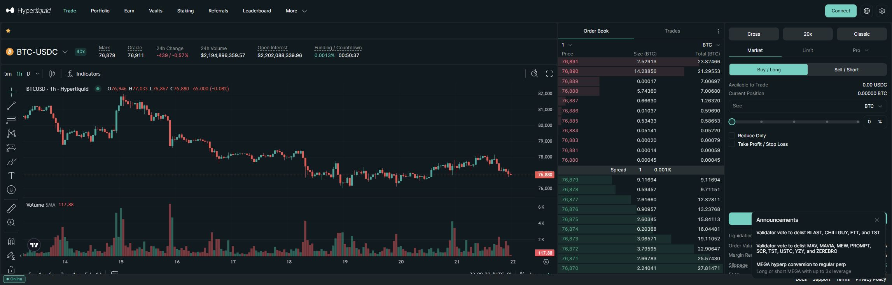

HYPE price
--
CoinGecko
01
Portfolio Snapshot
$5.1BTVL snapshot
$176B30d perpetual volume
$8.9BOpen interest
$56.8M30d fees
59.3KDaily active addresses
Personal Thesis Entry Marker
May 2026 was the entry window for this thesis. The chart below frames the position around the low-to-mid $40s public price zone and the breakout toward the high $40s later in the month.
Chart uses selected public May 2026 price snapshots rather than a live feed. Exact personal entry price can be added if you want the page to show cost basis, unrealized gain/loss, or portfolio sizing.
These figures matter because exchanges are reflexive businesses. Liquidity attracts traders, traders generate fees, fees fund incentives and buybacks, deeper books attract more sophisticated flow, and the venue becomes harder to displace.
Investment Read
The investable question is whether Hyperliquid can convert a lead in onchain perps into a broader financial infrastructure moat before regulatory, governance, or security risks catch up.
02
Project Overview & Investment Lens
Hyperliquid began with a narrow wedge: fast, low-friction onchain perpetuals trading. That wedge matters because perpetual futures are one of crypto's most important native financial products. They are liquid, global, always-on, capital-efficient, and highly sensitive to execution quality.
The larger thesis is that the winning onchain derivatives venue may not look like an app deployed on a general chain. It may look like a chain built around exchange infrastructure from first principles.
A fast perps DEX competing with dYdX, GMX, Jupiter, edgeX, and centralized exchanges.
A purpose-built chain where exchange logic, settlement, collateral, and applications share one liquidity base.
A future market infrastructure layer for execution tools, treasury products, stablecoin flows, analytics, and structured finance.
The real question
Most DeFi protocols fight for users at the application layer. Hyperliquid is making a more aggressive bet: if the exchange is important enough, the chain should be organized around the exchange. That is why the project should be evaluated less like a normal DeFi app and more like an emergent financial operating system.
Moat
Liquidity is not evenly distributed. Once a venue has tighter spreads, deeper books, and better execution, professional flow has a reason to stay.
Expansion
HyperEVM gives builders a route to compose with that liquidity instead of building isolated apps with weaker market depth.
Risk
The same integration that creates the moat also concentrates operational, validator, bridge, and regulatory risk.
03
Product & Technology
The differentiator is vertical integration. Hyperliquid is designed around a native order-book engine rather than an automated market maker retrofitted onto a general-purpose chain. That choice matters because derivatives traders care about latency, margining, liquidations, oracle quality, and predictable execution.
Protocol Snapshot
At a high level, Hyperliquid combines an exchange engine, an EVM app layer, validator-secured settlement, bridged collateral, and HYPE staking into one integrated financial stack.
Trade spot and perpetual markets through front ends, APIs, wallets, and builder interfaces.
Order flow + collateral
Collateral enters through bridge flows and aligned quote assets that support trading and settlement.
Deposit / withdraw
Secure consensus, bridge processes, market rules, and protocol-level operations.
Consensus layer
Native order books, margin, liquidations, oracle-driven mark prices, perp markets, spot markets, and HIP-3 builder-deployed perps.
Exchange engine
Gas on HyperEVM, staking asset, fee-discount asset, and token linked to security and network activity.
Stake / gas / incentives
Smart-contract layer secured by the same validator set and positioned close to native exchange liquidity.
Programmable apps
Risk dashboards, vaults, structured products, market data, treasury tools, and synthetic TradFi market front ends.
Liquidity becomes platform
Interaction Demo
A real trading surface shows what users actually experience: chart, order book, market stats, leverage controls, and the order ticket. The protocol trace beside it explains what is happening underneath.

Screenshot captured from the official Hyperliquid app at app.hyperliquid.xyz/trade/BTC. Market prices and announcements are point-in-time and may change.
01 / Collateral
USDC available
Bridge and aligned quote assets form the collateral base.
02 / HyperCore
Order matched
Native order book handles matching, margin, mark price, and liquidations.
03 / Validators
State finalized
Validators secure consensus, bridge operations, and protocol state.
04 / Fees + HYPE
Value loop
Trading fees link back to HYPE utility, staking, gas, and incentives.
05 / Apps
Composability
HyperEVM apps build vaults, dashboards, structured products, and TradFi front ends.
The screenshot is a static capture of the official public interface. The protocol trace is explanatory and does not represent a live order or financial recommendation.
Trading
Spot and perpetual order books with exchange logic close to the chain.
Settlement
Margin, liquidations, oracle pricing, and clearing as native infrastructure.
Apps
HyperEVM lets developers build around the liquidity layer.
Token
HYPE links gas, staking, fee discounts, and network security.
Performance-oriented consensus for a purpose-built financial chain.
Native order books, margin, liquidations, and oracle-driven mark pricing.
Smart contracts secured by the same validator set and close to native liquidity.
Hybrid custody with validator-signed deposits and withdrawals.
Security Read
The technology thesis is strong, but it is not purely trustless. Bridge flows, validators, front ends, custody operations, and key management remain part of the real security surface.
04
Tokenomics & Governance
HYPE is more interesting than a passive governance wrapper. It is used for staking, gas on HyperEVM, and fee discounts, while trading activity can feed the Assistance Fund purchase loop. That creates a plausible link between network usage and token demand, although supply accounting and unlocks still need careful tracking.
Future emissions & community rewards38.888%
Genesis distribution31.0%
Core contributors23.8%
Hyper Foundation6.0%
Grants / HIP-20.312%
Token thesis
The bull case is not simply "more volume means higher token price." The stronger version is that HYPE becomes a multi-function asset inside a financial stack: security collateral, fee-discount asset, gas token, and indirect beneficiary of fee-funded market purchases.
Utility
Staking and gas demand become more meaningful if HyperEVM application activity grows beyond the exchange itself.
Value loop
Fee flows into the Assistance Fund create buyback-style support, but the strength of that loop depends on sustained trading activity.
Governance
The active validator set is performance-friendly but concentration-sensitive. Delegation patterns matter.
01Users trade spot and perps
02Protocol fees flow
03Assistance Fund buys HYPE
04Holders stake or delegate
05Validators secure consensus
The main caveat: token economics are only as durable as the venue's liquidity and regulatory survivability. A strong buyback loop is not a substitute for resilient market structure.
05
Market Traction & Competitive Position
Traction is the reason to take the thesis seriously. In onchain derivatives, liquidity depth is both product quality and distribution. Traders do not choose venues only because they like the brand; they choose the place where execution, margin, and liquidity are best.
The competitive point is not that other venues disappear. The point is that derivatives venues often exhibit winner-take-most behavior around liquidity. If Hyperliquid remains the deepest onchain venue, it can become the default base layer for products that need execution quality: copy trading, treasury automation, structured products, market-making tooling, risk dashboards, and stablecoin collateral workflows.
Why this could be bigger than perps
Crypto perps are the beachhead. The larger opportunity is to become the programmable venue where crypto-native capital markets are built: collateral, leverage, portfolio margining, structured risk, onchain market data, and applications that are closer to liquidity than they would be on a generic chain.
06
TradFi Perps & Synthetic Markets
The missing piece in a Hyperliquid thesis is that the opportunity is not limited to crypto assets. HIP-3 allows builders to deploy their own perp markets on HyperCore, with deployer-defined market specifications, oracle definitions, leverage limits, and settlement rules. That pushes Hyperliquid toward a much larger design space: onchain perpetual exposure to equities, FX, commodities, rates-like instruments, indices, and other real-world price feeds.
Stock perps can give 24/7 synthetic exposure to names like major tech or high-beta public companies, without users touching the underlying equity.
Currency perps turn Hyperliquid from a crypto venue into a possible onchain macro trading venue for dollar, euro, yen, sterling, and emerging-market pairs.
Oil, gold, and other commodity-linked perps extend the platform into global macro and hedging narratives.
Index perps could make broad market exposure programmable, composable, and usable inside DeFi strategies.
Price feed
External asset prices need reliable, manipulation-resistant oracle definitions.
Perp market
HIP-3 deployers define the contract, leverage limits, and market operation.
Collateral
Stablecoins and aligned quote assets can become the settlement layer for non-crypto exposure.
Apps
Front ends, vaults, risk tools, and structured products can package the exposure for users.
Why TradFi perps change the thesis
If Hyperliquid becomes a venue where builders can list liquid, reliable synthetic markets for both crypto and traditional assets, the platform stops being only a crypto derivatives exchange. It starts looking like an onchain venue for global risk transfer.
TAM
The addressable market expands from crypto-native speculation into equities, macro, commodities, FX, hedging, and portfolio construction.
Access
Retail users get one account, one collateral base, and 24/7 access to markets that are normally fragmented across brokers, CFD venues, futures exchanges, and geography.
Composability
TradFi-like exposures can become building blocks inside DeFi: vault strategies, collateral management, structured yield, automated hedging, and portfolio risk tools.
Constraint
The harder the asset is to price cleanly, the more important oracle quality, market operation, legal posture, and slashing design become.
Important Distinction
TradFi perps are synthetic exposure, not ownership of the underlying stock, currency, commodity, or index. That makes them powerful for access and composability, but also increases legal, oracle, and market-integrity risk.
07
Future Scenarios
The future of Hyperliquid depends on whether it can turn early liquidity dominance into durable financial infrastructure. Three paths matter most:
Upside case
Crypto-native CME
Hyperliquid remains the deepest onchain derivatives venue, HIP-3 expands credible markets into TradFi assets, HyperEVM applications grow around liquidity, and HYPE captures more network utility through staking, gas, and fee-linked demand.
Base case
Perps leader
The exchange stays dominant in crypto perps, while TradFi perps remain a promising but uneven product category. HYPE remains linked to trading activity, while broader app-layer value accrual takes longer to prove.
Downside case
Risk reset
Regulatory pressure, bridge/validator concerns, liquidity migration, or a major security incident resets trust. In that case, the platform thesis compresses back into a high-risk trading-venue thesis.
Liquidity
OI + DepthOpen interest, spreads, liquidation performance, and major-pair depth.
Usage
DAA + FeesDaily active addresses, recurring fee generation, and non-incentivized activity.
Market breadth
HIP-3Quality of builder-deployed markets across equities, FX, commodities, indices, and crypto long-tail assets.
Ecosystem
HyperEVMApp launches, stablecoin flows, builder quality, and usage outside the core perps UI.
Risk
ValidatorsValidator concentration, bridge behavior, audits, incidents, and jurisdictional pressure.
08
Risks & Investor Checklist
The opportunity is real, but the gating risks are not cosmetic. A serious thesis should start with legal, infrastructure, economics, and security diligence, not just volume charts.
Restricted jurisdictions and leveraged markets remain the highest-signal legal risk.
TradFi-style markets depend on reliable external reference prices and manipulation-resistant settlement design.
Deposits, withdrawals, consensus, and deployer review depend on validator integrity and concentration.
Bridge-side audits do not cover every off-chain operational dependency.
Validator-centric governance is workable, but concentration should be monitored.
Legal
Is the product insulated from restricted-jurisdiction user flows, benchmark manipulation issues, and money-transmission risk?
Infrastructure
What are the exact dependencies on bridge withdrawals, validator concentration, API uptime, and oracle quality?
Economics
How do fee flows, deployer economics, and HYPE buyback mechanics affect the portfolio company's business model?
Security
Which parts of the stack rely on unaudited off-chain components, operational key management, or upgrade authority?
Bottom Line
Hyperliquid is a platform thesis, not only a token or trading thesis. The upside is a crypto-native financial operating system that can support both crypto and traditional-asset synthetic markets. The downside is that the same integration creates concentrated technical, governance, oracle, and regulatory risk.
09
Public Source Base
Referenced source categories
Official Hyperliquid docs, HIP-3 builder-deployed perpetuals docs, HyperEVM docs, staking docs, fee docs, bridge docs, validator docs, aligned quote asset docs, public contracts repository, DefiLlama, Token Terminal, Circle, CoinGecko, Binance launch materials, Presto Research, OTC Markets filing references, Reuters, FIA, BIS, CoinDesk, and Hyperliquid terms. Figures are presented as May 2026 public-source screening snapshots and should be refreshed before any live investment decision.
Live thesis monitor data is fetched client-side from CoinGecko, Hyperliquid's public info endpoint, and DeFiLlama where browser access is available. If a source rate-limits or blocks a browser request, the monitor marks itself as partial rather than silently substituting stale figures.